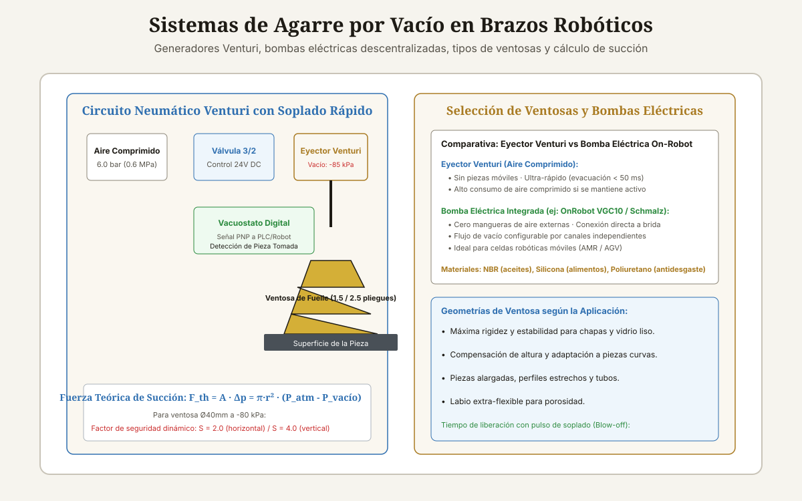

<!DOCTYPE html>
<html lang="es-CL">
<head>
<meta charset="UTF-8">
<meta name="viewport" content="width=device-width, initial-scale=1">

<title>Pinzas de Vacío para Brazos Robóticos</title>
<meta name="description" content="Guía técnica de pinzas de vacío para robótica: eyectores Venturi, bombas descentralizadas, cálculo de fuerza de succión, tipos de ventosas y vacuostatos.">
<meta name="author" content="Alberto Gallardo">
<meta name="robots" content="index,follow,max-image-preview:large">
<link rel="canonical" href="https://www.ukrabot.cl/blog/pinzas-de-vacio-para-brazos-roboticos">

<meta property="og:type" content="article">
<meta property="og:title" content="Pinzas de Vacío para Brazos Robóticos">
<meta property="og:description" content="Guía técnica de pinzas de vacío para robótica: eyectores Venturi, bombas descentralizadas, cálculo de fuerza de succión, tipos de ventosas y vacuostatos.">
<meta property="og:image" content="https://www.ukrabot.cl/blog/pinzas_vacio_roboticas_esquema.svg">
<meta property="og:url" content="https://www.ukrabot.cl/blog/pinzas-de-vacio-para-brazos-roboticos">
<meta property="og:locale" content="es_CL">
<meta property="og:site_name" content="Blog de Ingeniería Robótica">

<meta name="twitter:card" content="summary_large_image">
<meta name="twitter:title" content="Pinzas de Vacío para Brazos Robóticos">
<meta name="twitter:description" content="Guía técnica de pinzas de vacío para robótica: eyectores Venturi, bombas descentralizadas, cálculo de fuerza de succión, tipos de ventosas y vacuostatos.">
<meta name="twitter:image" content="https://www.ukrabot.cl/blog/pinzas_vacio_roboticas_esquema.svg">

<script type="application/ld+json">
{
  "@context": "https://schema.org",
  "@type": "TechArticle",
  "headline": "Pinzas de Vacío para Brazos Robóticos",
  "description": "Guía técnica de pinzas de vacío para robótica: eyectores Venturi, bombas descentralizadas, cálculo de fuerza de succión, tipos de ventosas y vacuostatos.",
  "author": {
    "@type": "Person",
    "name": "Alberto Gallardo",
    "jobTitle": "Analista Programador Computacional",
    "url": "https://www.ukrabot.cl/about",
    "worksFor": {
      "@type": "Organization",
      "name": "Blog de Ingeniería Robótica"
    }
  },
  "publisher": {
    "@type": "Organization",
    "name": "Blog de Ingeniería Robótica",
    "url": "https://www.ukrabot.cl",
    "logo": {
      "@type": "ImageObject",
      "url": "https://www.ukrabot.cl/logo.png"
    }
  },
  "datePublished": "2026-08-15",
  "dateModified": "2026-08-15",
  "mainEntityOfPage": {
    "@type": "WebPage",
    "@id": "https://www.ukrabot.cl/blog/pinzas-de-vacio-para-brazos-roboticos"
  },
  "image": "https://www.ukrabot.cl/blog/pinzas_vacio_roboticas_esquema.svg",
  "proficiencyLevel": "Intermedio - Avanzado",
  "dependencies": "Neumática industrial, suministro de aire comprimido a 6 bar o bomba de vacío 24V DC, sensores vacuostáticos PNP",
  "wordCount": "3400",
  "inLanguage": "es-CL"
}
</script>

<script type="application/ld+json">
{
  "@context": "https://schema.org",
  "@type": "BreadcrumbList",
  "itemListElement": [
    {
      "@type": "ListItem",
      "position": 1,
      "name": "Inicio",
      "item": "https://www.ukrabot.cl/"
    },
    {
      "@type": "ListItem",
      "position": 2,
      "name": "Blog",
      "item": "https://www.ukrabot.cl/blog/"
    },
    {
      "@type": "ListItem",
      "position": 3,
      "name": "Pinzas de Vacío para Brazos Robóticos",
      "item": "https://www.ukrabot.cl/blog/pinzas-de-vacio-para-brazos-roboticos"
    }
  ]
}
</script>

<script type="application/ld+json">
{
  "@context": "https://schema.org",
  "@type": "FAQPage",
  "mainEntity": [
    {
      "@type": "Question",
      "name": "¿Por qué una ventosa pierde fuerza en altitudes elevadas (ej: Ciudad de México o Santiago)?",
      "acceptedAnswer": {
        "@type": "Answer",
        "text": "Porque la fuerza de sujeción depende de la presión atmosférica exterior ($P_{atm}$). A nivel del mar $P_{atm} \u0007pprox 101.3\text{ kPa}$, pero a 2.500 metros sobre el nivel del mar la presión cae a ~75 kPa. Esto reduce la diferencia de presión máxima alcanzable $\\Delta p$ y por tanto la fuerza de succión en un 20% a 25%."
      }
    },
    {
      "@type": "Question",
      "name": "¿Qué hacer si la pieza es porosa (como cartón corrugado sin plastificar)?",
      "acceptedAnswer": {
        "@type": "Answer",
        "text": "En materiales porosos, el aire se filtra a través del material impidiendo alcanzar niveles de vacío altos. Se debe utilizar un eyector de alto caudal volumétrico (High Flow Ejector > 150 L/min) con ventosas de labio esponjoso de caucho celular que sellan los poros exteriores."
      }
    },
    {
      "@type": "Question",
      "name": "¿Cómo dimensionar el diámetro interior de las mangueras de vacío?",
      "acceptedAnswer": {
        "@type": "Answer",
        "text": "Las mangueras entre el eyector y la ventosa deben tener el mayor diámetro interior posible (mínimo Ø6 mm o Ø8 mm) y la menor longitud posible (< 0.5 m). Mangueras largas y estrechas introducen pérdidas de carga por fricción que triplican el tiempo de evacuación."
      }
    },
    {
      "@type": "Question",
      "name": "¿Qué es un vacuostato con salida analógica vs digital?",
      "acceptedAnswer": {
        "@type": "Answer",
        "text": "Un vacuostato digital entrega una señal binaria PNP/NPN cuando el vacío supera un umbral fijado (pieza presente). Un vacuostato analógico entrega una señal de 4-20 mA o 0-10 V proporcional al vacío en tiempo real, permitiendo al robot detectar fugas graduales o suciedad en los filtros."
      }
    },
    {
      "@type": "Question",
      "name": "¿Se pueden manipular piezas a 150 °C con ventosas de vacío?",
      "acceptedAnswer": {
        "@type": "Answer",
        "text": "Sí, utilizando ventosas con labios de compuesto fluoroelastómero (FKM / Viton) o silicona de alta temperatura capaces de operar de forma continua hasta 200-250 °C en procesos de moldeo por inyección."
      }
    }
  ]
}
</script>

<style>
:root{--ink:#f6f4ee;--card:#ffffff;--text:#1e1b15;--muted:#57534a;--quiet:#8b8577;--gold:#a97b23;--gold-bright:#e4c07a;--blue:#2f6fb0;--line:rgba(30,25,15,.09)}
*{box-sizing:border-box}
html{scroll-behavior:smooth}
body{margin:0;background:var(--ink);color:var(--text);font-family:Inter,system-ui,-apple-system,Segoe UI,sans-serif;line-height:1.7;overflow-x:hidden}
img{max-width:100%;height:auto}
a{color:var(--blue);text-underline-offset:3px}
.container{max-width:1050px;margin:auto;padding:0 24px}

/* NAV */
.site-nav{position:sticky;top:0;z-index:50;background:rgba(246,244,238,.95);backdrop-filter:blur(12px);border-bottom:1px solid var(--line)}
.nav-inner{position:relative;display:flex;justify-content:space-between;align-items:center;padding:16px 24px;max-width:1050px;margin:auto;gap:12px}
.logo{color:var(--text);text-decoration:none;font-family:Georgia,serif;font-size:1.35rem;flex-shrink:0}
.logo span{color:var(--gold);font-style:italic}
.nav-links{display:flex;gap:20px;font-size:.86rem}
.nav-links a{color:var(--muted);text-decoration:none;white-space:nowrap}
.nav-links a:hover{color:var(--text)}
.nav-toggle{display:none;flex-direction:column;justify-content:center;gap:5px;width:38px;height:38px;padding:0;background:none;border:1px solid var(--line);border-radius:8px;cursor:pointer;flex-shrink:0}
.nav-toggle span{display:block;width:18px;height:2px;background:var(--text);margin:0 auto;transition:transform .2s ease,opacity .2s ease}
.nav-toggle[aria-expanded="true"] span:nth-child(1){transform:translateY(7px) rotate(45deg)}
.nav-toggle[aria-expanded="true"] span:nth-child(2){opacity:0}
.nav-toggle[aria-expanded="true"] span:nth-child(3){transform:translateY(-7px) rotate(-45deg)}

.progress-bar{position:fixed;top:0;left:0;height:3px;width:0;background:linear-gradient(90deg,var(--gold),var(--blue));z-index:300;transition:width .08s linear}

.hero{position:relative;min-height:50vh;display:flex;align-items:end;overflow:hidden;background:#151310}
.hero>img{position:absolute;inset:0;width:100%;height:100%;object-fit:cover;filter:brightness(.45) contrast(1.08);z-index:0}
.hero:after{content:"";position:absolute;inset:0;background:linear-gradient(180deg,rgba(18,15,11,.35) 0%,rgba(18,15,11,.62) 55%,rgba(18,15,11,.88) 100%);z-index:1}
.hero-inner{position:relative;z-index:2;padding:90px 24px 60px;width:100%;max-width:1050px;margin:auto}
.eyebrow{color:var(--gold-bright);font-size:.76rem;letter-spacing:.13em;text-transform:uppercase;font-weight:700}
.hero h1{font-family:Georgia,serif;font-size:clamp(1.9rem,5.5vw,3.8rem);line-height:1.15;font-weight:400;max-width:900px;margin:18px 0;color:#fff;word-wrap:break-word}
.hero p{color:rgba(245,243,238,.78);max-width:720px;font-size:1.05rem}
.byline{color:rgba(245,243,238,.55);font-size:.85rem;margin-top:14px}
.byline a{color:var(--gold-bright);text-decoration:none}
.byline a:hover{text-decoration:underline}

.article-body{padding-top:64px;padding-bottom:90px}
.article-body h2{font-family:Georgia,serif;font-size:1.9rem;font-weight:400;line-height:1.2;margin:54px 0 16px;color:var(--text)}
.article-body h3{font-size:1.18rem;margin:32px 0 8px;color:var(--text)}
.article-body p{color:var(--muted);margin:0 0 20px}
.article-body li{color:var(--muted);margin:8px 0}
.article-body strong{color:var(--text)}

.toc,.note,.cta{background:linear-gradient(135deg,rgba(169,123,35,.08),rgba(47,111,176,.06));border:1px solid var(--line);border-radius:14px;padding:24px;margin:28px 0}
.toc h2{font-family:inherit;font-size:1.05rem;margin:0 0 10px}
.toc ol{margin:0;padding-left:22px}
.toc a{color:var(--muted);text-decoration:none}
.toc a:hover{color:var(--gold)}

.note{border-left:4px solid var(--gold)}
.note strong{color:var(--text)}
.warning{background:linear-gradient(135deg,rgba(178,40,30,.08),rgba(178,40,30,.03));border:1px solid rgba(178,40,30,.25);border-left:4px solid #b2281e;border-radius:14px;padding:24px;margin:28px 0}
.warning strong{color:#7a1c14}

.article-img{margin:0 0 42px;border:1px solid var(--line);border-radius:14px;overflow:hidden}
.article-img img{width:100%;display:block}
.caption{padding:12px 16px;background:var(--card);color:var(--quiet);font-size:.82rem}

.table-wrap{overflow-x:auto;-webkit-overflow-scrolling:touch;border:1px solid var(--line);border-radius:12px;margin:22px 0;box-shadow:0 8px 24px rgba(30,25,15,.06)}
table{border-collapse:collapse;width:100%;min-width:650px;background:var(--card)}
th,td{text-align:left;padding:13px 14px;border-bottom:1px solid var(--line);color:var(--muted)}
th{background:#faf7f0;color:var(--text);font-size:.78rem;text-transform:uppercase;letter-spacing:.06em}
td:first-child{color:var(--text);font-weight:600}

pre{overflow-x:auto;-webkit-overflow-scrolling:touch;background:#14121a;border:1px solid rgba(255,255,255,.08);border-radius:12px;padding:20px;color:#e8d9b6;line-height:1.5;font-size:.88rem;white-space:pre-wrap;word-break:break-word}
code{font-family:ui-monospace,SFMono-Regular,Consolas,monospace}

.faq{border-bottom:1px solid var(--line)}
details{border-top:1px solid var(--line);padding:16px 0}
summary{cursor:pointer;color:var(--text);font-weight:600}
details p{padding-top:10px;margin-bottom:0}

.footer-nav{border-top:1px solid var(--line);padding-top:34px;margin-top:54px;display:flex;justify-content:space-between;gap:20px;flex-wrap:wrap}
.footer-nav a{color:var(--muted);text-decoration:none;max-width:100%}
.footer-nav a:hover{color:var(--gold)}

.disclosure{font-size:.78rem;color:var(--quiet);border-top:1px solid var(--line);padding-top:16px;margin-top:34px}
.cta h3{margin:0 0 8px;font-size:1.05rem;color:var(--text)}
.cta p{margin:0}

/* ===== RESPONSIVE ===== */
@media(max-width:760px){
  .nav-toggle{display:flex}
  .nav-links{
    position:absolute;
    top:100%;
    left:0;
    right:0;
    flex-direction:column;
    align-items:flex-start;
    gap:2px;
    background:rgba(246,244,238,.98);
    backdrop-filter:blur(12px);
    border-bottom:1px solid var(--line);
    padding:8px 24px 18px;
    box-shadow:0 12px 24px rgba(30,25,15,.08);
    display:none;
  }
  .nav-links.open{display:flex}
  .nav-links a{padding:10px 0;width:100%}
}

@media(max-width:700px){
  .hero-inner{padding:70px 20px 40px}
  .article-body h2{font-size:1.55rem;margin:40px 0 14px}
  .article-body{padding-top:44px;padding-bottom:60px}
}

@media(max-width:480px){
  .container{padding:0 16px}
  .nav-inner{padding:14px 16px}
  .logo{font-size:1.15rem}
  .hero{min-height:55vh}
  .hero-inner{padding:60px 16px 35px}
  .hero p{font-size:.95rem}
  .eyebrow{font-size:.7rem}
  .article-body h2{font-size:1.35rem}
  .article-body h3{font-size:1.05rem}
  .toc,.note,.cta,.warning{padding:16px;margin:20px 0}
  .toc ol{padding-left:18px}
  th,td{padding:10px 10px;font-size:.82rem}
  table{min-width:560px}
  pre{padding:14px;font-size:.78rem}
  .article-img .caption{font-size:.78rem;padding:10px 12px}
  .disclosure{font-size:.74rem}
  .footer-nav{gap:12px}
  .footer-nav a{font-size:.9rem}
}
</style>
  <script>
  window.dataLayer = window.dataLayer || [];
  function gtag(){dataLayer.push(arguments);}
  gtag('consent', 'default', {
    'ad_storage': 'denied',
    'ad_user_data': 'denied',
    'ad_personalization': 'denied',
    'analytics_storage': 'denied',
    'wait_for_update': 500
  });
  (function(){
    try {
      var c = document.cookie.match(/(?:^|;\s*)rel_consent=([^;]+)/);
      if (c && c[1] === 'granted') {
        gtag('consent', 'update', {
          'ad_storage': 'granted',
          'ad_user_data': 'granted',
          'ad_personalization': 'granted',
          'analytics_storage': 'granted'
        });
      }
    } catch (e) {}
  })();
</script>
  <script async src="https://pagead2.googlesyndication.com/pagead/js/adsbygoogle.js?client=ca-pub-7032484018692343" crossorigin="anonymous"></script>
  <!-- Google tag (gtag.js) -->
  <script async src="https://www.googletagmanager.com/gtag/js?id=G-1ZVHF8X35Q"></script>
  <script>
    window.dataLayer = window.dataLayer || [];
    function gtag(){dataLayer.push(arguments);}
    gtag('js', new Date());
    gtag('config', 'G-1ZVHF8X35Q');
  </script>

</head>
<body>

<div class="progress-bar" id="progress-bar" aria-hidden="true"></div>

<nav class="site-nav" aria-label="Navegación del sitio">
  <div class="nav-inner">
    <a class="logo" href="/">Robótica <span>Ingeniería</span></a>
    <button class="nav-toggle" id="nav-toggle" aria-expanded="false" aria-controls="nav-links" aria-label="Abrir menú de navegación">
      <span></span><span></span><span></span>
    </button>
    <div class="nav-links" id="nav-links">
      <a href="/">Inicio</a>
      <a href="/#categories">Tutoriales</a>
      <a href="/#proyecto-destacado">Proyecto del Mes</a>
      <a href="/about">Sobre Nosotros</a>
      <a href="/contact">Contacto</a>
    </div>
  </div>
</nav>

<header class="hero">
  
  <div class="hero-inner">
    <div class="eyebrow">Efectores Finales y Pinzas · Actualizado el <time datetime="2026-08-15">15 de agosto de 2026</time></div>
    <h1>Pinzas de Vacío para Brazos Robóticos</h1>
    <p>Tecnología de sujeción neumática: eyectores Venturi multietapa vs bombas eléctricas, cálculo de fuerza de elevación vertical y horizontal, selección de ventosas y optimización del consumo de aire comprimido.</p>
    <p class="byline">Por <a href="/about">Alberto Gallardo</a>, Analista Programador Computacional · 19 min de lectura</p>
  </div>
</header>

<main class="container article-body">
<article>

<div class="article-img">
  
  <div class="caption">Circuito neumático con eyector Venturi, vacuostato digital con detección de pieza y comparativa de tipos de ventosas.</div>
</div>

<nav class="toc" aria-label="Índice del contenido">
  <h2>Contenido de la guía</h2>
  <ol>
    <li><a href="#fundamentos-vacio-robotica">Física de la sujeción por vacío y niveles de presión negativa</a></li>
<li><a href="#eyectores-vs-bombas">Generación de vacío: Eyector Venturi vs Bombas eléctricas descentralizadas</a></li>
<li><a href="#calculo-fuerza-succion">Cálculo matemático riguroso de fuerza de sujeción y número de ventosas</a></li>
<li><a href="#tipos-ventosas-materiales">Tipos de ventosas y selección de elastómeros</a></li>
<li><a href="#optimizacion-aire-soplado">Control con vacuostato digital, soplado rápido (Blow-off) y ahorro de aire</a></li>
<li><a href="#faq">Preguntas frecuentes</a></li>
  </ol>
</nav>

<section id="fundamentos-vacio-robotica">
<h2>Física de la sujeción por vacío y niveles de presión negativa</h2>

<p>Las pinzas de vacío son el estándar indiscutible en aplicaciones de paletizado, manipulación de vidrio, chapa metálica estampada, cajas de cartón y empaque de alimentos. Al contrario de lo que sugiere el lenguaje coloquial, el vacío "no succiona": es la <strong>presión atmosférica circundante ($P_{atm} pprox 101.3	ext{ kPa}$ a nivel del mar)</strong> la que empuja la pieza contra la ventosa cuando se evacúa el aire de su interior.</p>
<p>En neumática robótica, el nivel de vacío se expresa en porcentaje o en presión manométrica negativa (kPa o mbar):</p>
<ul>
  <li><strong>Vacío Bajo (-20 a -40 kPa / 20-40% vacío):</strong> Utilizado para piezas porosas como cartón corrugado o madera sin tratar donde el flujo de aire (caudal en L/min) es más importante que la presión máxima.</li>
  <li><strong>Vacío Alto (-70 a -90 kPa / 70-90% vacío):</strong> Utilizado para materiales no porosos y herméticos (vidrio, chapa pulida, plástico liso) para maximizar la fuerza de retención en movimientos dinámicos de alta aceleración.</li>
</ul>

</section>
<section id="eyectores-vs-bombas">
<h2>Generación de vacío: Eyector Venturi vs Bombas eléctricas descentralizadas</h2>

<div class="table-wrap">
<table>
<thead>
<tr>
<th>Tecnología de Generación</th>
<th>Principio Operativo</th>
<th>Tiempo de Evacuación</th>
<th>Consumo Energético</th>
<th>Mantenimiento</th>
<th>Caso de Uso Ideal</th>
</tr>
</thead>
<tbody>
<tr>
<td><strong>Eyector Venturi Multietapa</strong><br><em>(ej: Piab piCLASSIC, Schmalz SB)</em></td>
<td>Efecto Bernoulli mediante toberas cónicas alimentadas con aire a 4-6 bar</td>
<td><strong>Ultra-rápido (&lt; 30 ms)</strong></td>
<td>Alto si opera continuo; bajo con válvula de corte de aire</td>
<td>Cero piezas móviles, vida útil ilimitada</td>
<td>Líneas fijas de alta cadencia (Pick &amp; Place &gt; 60 ciclos/min)</td>
</tr>
<tr>
<td><strong>Bomba Eléctrica Descentralizada</strong><br><em>(ej: OnRobot VGC10, Schmalz CobotPump)</em></td>
<td>Microbomba de diafragma o paletas rotativas integrada a 24V DC</td>
<td>Medio (80 a 150 ms)</td>
<td><strong>Muy bajo:</strong> Solo consume energía durante el agarre</td>
<td>Desgaste periódico de membranas tras 5000h</td>
<td>Cobots colaborativos y robots móviles autónomos (AMR/AGV)</td>
</tr>
<tr>
<td><strong>Bomba Centralizada de Paletas / Canal Lateral</strong></td>
<td>Bomba trifásica exterior conectada por manguera de gran diámetro</td>
<td>Rápido con tanque pulmón</td>
<td>Moderado</td>
<td>Cambio periódico de aceite / filtros</td>
<td>Paletizadores masivos de sacos y cajas pesadas</td>
</tr>
</tbody>
</table>
</div>

</section>

<div class="ad-slot" style="margin:34px 0;min-height:280px;text-align:center;">
  <!-- ANUNCIO UKRABOT -->
  <ins class="adsbygoogle"
       style="display:block"
       data-ad-client="ca-pub-7032484018692343"
       data-ad-slot="7434550690"
       data-ad-format="auto"
       data-full-width-responsive="true"></ins>
  <script>(adsbygoogle = window.adsbygoogle || []).push({});</script>
</div>
<section id="calculo-fuerza-succion">
<h2>Cálculo matemático riguroso de fuerza de sujeción y número de ventosas</h2>

<p>Para garantizar que la pieza no se desprenda durante una aceleración lateral brusca del brazo robótico, se deben calcular dos condiciones estáticas y dinámicas:</p>

<div class="note"><strong>1. Elevación Horizontal (Fuerza de tracción perpendicular pura):</strong>
$$F_{vertical} = m \cdot (g + a_{max}) \cdot S_1$$
Donde $S_1 = 1.5	ext{ a }2.0$ (factor de seguridad).
</div>

<div class="note"><strong>2. Elevación Vertical / Volteo (Fuerza de cizalla paralela con fricción $\mu$):</strong>
$$F_{horizontal} = rac{m \cdot (g + a_{max}) \cdot S_2}{\mu}$$
Donde $S_2 = 2.0	ext{ a }2.5$ y $\mu$ es el coeficiente de fricción del labio de la ventosa sobre la superficie ($\mu pprox 0.5$ en chapa seca; $\mu pprox 0.1$ en chapa aceitada).
</div>

<h3>Fórmula de Fuerza Teórica por Ventosa:</h3>
$$F_{ventosa} = A \cdot \Delta p = rac{\pi \cdot d^2}{4} \cdot (P_{atm} - P_{vacio})$$
<p><strong>Ejemplo práctico:</strong> Levantar una chapa de $m = 12.0	ext{ kg}$ con aceleración $a_{max} = 5.0	ext{ m/s}^2$, vacío de $-80	ext{ kPa}$ ($80.000	ext{ N/m}^2$), en orientación vertical con chapa aceitada ($\mu = 0.25$) y $S = 2.5$:</p>
$$F_{requerida} = rac{12.0 \cdot (9.81 + 5.0) \cdot 2.5}{0.25} = rac{12.0 \cdot 14.81 \cdot 2.5}{0.25} = rac{444.3}{0.25} = \mathbf{1.777.2	ext{ N}}$$
<p>Si utilizamos ventosas circulares de $arnothing 50	ext{ mm}$ ($d = 0.05	ext{ m}$):</p>
$$F_{ventosa} = rac{\pi \cdot 0.05^2}{4} \cdot 80.000 = 0.0019635 \cdot 80.000 pprox \mathbf{157.0	ext{ N por ventosa}}$$
$$N_{ventosas} = rac{F_{requerida}}{F_{ventosa}} = rac{1777.2}{157.0} = 11.31 \implies \mathbf{12	ext{ ventosas distribuidas}}$$

</section>
<section id="tipos-ventosas-materiales">
<h2>Tipos de ventosas y selección de elastómeros</h2>

<ul>
  <li><strong>Ventosas Planas (Flat):</strong> Máxima rigidez torsional y respuesta rápida. Ideales para chapa metálica, tableros de madera y vidrio plano.</li>
  <li><strong>Ventosas de Fuelle (1.5 / 2.5 Pliegues):</strong> El fuelle actúa como un resorte neumático que compensa desniveles de altura (hasta 15 mm) y se adapta a superficies cóncavas o convexas (parachoques de automóviles, botellas).</li>
  <li><strong>Ventosas Ovaladas:</strong> Diseñadas para piezas alargadas donde una ventosa redonda se saldría del borde (perfiles de aluminio, carcasas de smartphones).</li>
</ul>
<h3>Materiales de labio según el entorno industrial:</h3>
<ul>
  <li><strong>NBR (Nitrilo):</strong> Económico, excelente resistencia a aceites de corte y grasas mecánicas. Rango: -20 °C a 90 °C.</li>
  <li><strong>Silicona (SI / VMQ):</strong> Grado alimenticio FDA, extremadamente flexible para bolsas plásticas, no deja marcas en vidrio caliente. Rango: -50 °C a 200 °C.</li>
  <li><strong>Poliuretano (PU / Elastodur):</strong> Resistencia al desgaste abrasivo 5 veces mayor que el NBR. Vida útil superior a 5 millones de ciclos en chapa estampada.</li>
</ul>

</section>
<section id="optimizacion-aire-soplado">
<h2>Control con vacuostato digital, soplado rápido (Blow-off) y ahorro de aire</h2>

<p>Para reducir el consumo de aire comprimido en un 80% en plantas industriales:</p>
<ol>
  <li><strong>Sistema de Ahorro de Aire Automático (Air-Saving Circuit):</strong> El eyector evacúa la ventosa hasta alcanzar -75 kPa; el vacuostato digital corta la válvula de alimentación neumática. Una válvula antirretorno retiene el vacío. Si el nivel cae por micro-fugas a -65 kPa, el eyector se reactiva solo durante 100 ms.</li>
  <li><strong>Pulso de Soplado Rápido (Blow-off Pulse):</strong> La elasticidad del labio de la ventosa tiende a retener la pieza por adherencia tras cortar el vacío. Una micro-válvula inyecta un pulso positivo de aire comprimido (0.5 bar durante 20 ms) para desprender la pieza de forma instantánea y precisa sin desviar la trayectoria.</li>
</ol>

</section>


<section class="faq" id="faq" aria-label="Preguntas frecuentes">
<h2>Preguntas Frecuentes</h2>
<div class="faq">
<details><summary>¿Por qué una ventosa pierde fuerza en altitudes elevadas (ej: Ciudad de México o Santiago)?</summary><p>Porque la fuerza de sujeción depende de la presión atmosférica exterior ($P_{atm}$). A nivel del mar $P_{atm} pprox 101.3	ext{ kPa}$, pero a 2.500 metros sobre el nivel del mar la presión cae a ~75 kPa. Esto reduce la diferencia de presión máxima alcanzable $\Delta p$ y por tanto la fuerza de succión en un 20% a 25%.</p></details>
<details><summary>¿Qué hacer si la pieza es porosa (como cartón corrugado sin plastificar)?</summary><p>En materiales porosos, el aire se filtra a través del material impidiendo alcanzar niveles de vacío altos. Se debe utilizar un eyector de alto caudal volumétrico (High Flow Ejector > 150 L/min) con ventosas de labio esponjoso de caucho celular que sellan los poros exteriores.</p></details>
<details><summary>¿Cómo dimensionar el diámetro interior de las mangueras de vacío?</summary><p>Las mangueras entre el eyector y la ventosa deben tener el mayor diámetro interior posible (mínimo Ø6 mm o Ø8 mm) y la menor longitud posible (< 0.5 m). Mangueras largas y estrechas introducen pérdidas de carga por fricción que triplican el tiempo de evacuación.</p></details>
<details><summary>¿Qué es un vacuostato con salida analógica vs digital?</summary><p>Un vacuostato digital entrega una señal binaria PNP/NPN cuando el vacío supera un umbral fijado (pieza presente). Un vacuostato analógico entrega una señal de 4-20 mA o 0-10 V proporcional al vacío en tiempo real, permitiendo al robot detectar fugas graduales o suciedad en los filtros.</p></details>
<details><summary>¿Se pueden manipular piezas a 150 °C con ventosas de vacío?</summary><p>Sí, utilizando ventosas con labios de compuesto fluoroelastómero (FKM / Viton) o silicona de alta temperatura capaces de operar de forma continua hasta 200-250 °C en procesos de moldeo por inyección.</p></details>
</div>
</section>

<p class="disclosure">Este artículo es contenido editorial independiente: no contiene ubicaciones patrocinadas ni enlaces de afiliado. El código, esquemas y parámetros de diseño son de carácter técnico y deben validarse con las hojas de datos de los fabricantes correspondientes. Si detectas un error técnico o tienes una sugerencia, puedes <a href="/contact">contactarnos directamente</a>.</p>

<div class="cta">
  <h3>Continúa explorando tutoriales técnicos</h3>
  <p>Descubre cómo sujetar piezas de acero sin aire comprimido en nuestra guía de pinzas magnéticas.</p>
</div>

<div class="footer-nav">
  <a href="/blog/fundamentos-de-diseno-de-pinzas-para-brazos-roboticos">← Fundamentos de Diseño de Pinzas para Brazos Robóticos</a>
  <a href="/blog/pinzas-magneticas-para-brazos-roboticos">Pinzas Magnéticas para Brazos Robóticos →</a>
</div>

</article>

<section class="editorial-sources" aria-label="Fuentes primarias" style="margin:48px 0 24px;padding:22px 24px;background:#ffffff;border:1px solid rgba(30,25,15,.09);border-radius:12px;">
<h2 style="margin-top:0;font-family:Georgia,serif;font-weight:400;font-size:1.4rem;color:#1e1b15;">Fuentes primarias y lecturas recomendadas</h2>
<p style="font-size:.9rem;color:#57534a;">Hojas de datos oficiales, estándares internacionales de ingeniería y documentación técnica citada en este artículo.</p>
<ul>
<li><a href="https://www.schmalz.com/" target="_blank" rel="noopener noreferrer">Schmalz GmbH — Vacuum Knowledge & Gripper Calculation Technical Handbook</a></li>
<li><a href="https://www.piab.com/" target="_blank" rel="noopener noreferrer">Piab AB — Vacuum Automation and Suction Cup Sizing Guidelines</a></li>
<li><a href="https://www.festo.com/" target="_blank" rel="noopener noreferrer">Festo AG — Fundamentals of Vacuum Technology in Industrial Automation</a></li>
<li><a href="https://www.iso.org/standard/46418.html" target="_blank" rel="noopener noreferrer">ISO 8573-1:2010 — Compressed Air Contaminants and Purity Classes for Pneumatics</a></li>
</ul>
<p style="font-size:.75rem;color:#8b8577;margin-bottom:0;">Enlaces y especificaciones revisadas: 15 de agosto de 2026.</p>
</section>
</main>

<footer class="container" style="border-top:1px solid var(--line);padding-top:34px;padding-bottom:45px;color:var(--quiet);font-size:.85rem">
  <p>Blog de Ingeniería Robótica · Tutoriales prácticos de Arduino, robótica, automatización y electrónica aplicada, escritos y mantenidos por Alberto Gallardo.</p>
  <p style="margin-top:10px;">
    <a href="/about" style="color:var(--muted);text-decoration:none;margin-right:16px;">Sobre Nosotros</a>
    <a href="/contact" style="color:var(--muted);text-decoration:none;margin-right:16px;">Contacto</a>
    <a href="/privacy" style="color:var(--muted);text-decoration:none;">Política de Privacidad</a>
  </p>
  <div style="max-width:1100px;margin:28px auto 0;padding-top:20px;border-top:1px solid rgba(30,25,15,.09);display:flex;flex-wrap:wrap;gap:18px;align-items:center;justify-content:space-between;">
      <p style="font-size:0.8rem;opacity:0.6;margin:0;">&copy; 2023&ndash;2026 Blog de Ingeniería Robótica · Alberto Gallardo. Todos los derechos reservados.</p>
      <nav aria-label="Enlaces legales y de empresa" style="display:flex;flex-wrap:wrap;gap:18px;">
        <a href="/about" style="font-size:0.82rem;opacity:0.75;text-decoration:none;color:inherit;">Sobre Nosotros</a>
        <a href="/contact" style="font-size:0.82rem;opacity:0.75;text-decoration:none;color:inherit;">Contacto</a>
        <a href="/privacy" style="font-size:0.82rem;opacity:0.75;text-decoration:none;color:inherit;">Política de Privacidad</a>
        <a href="/terms" style="font-size:0.82rem;opacity:0.75;text-decoration:none;color:inherit;">Términos y Condiciones</a>
      </nav>
  </div>
</footer>

<div id="rel-consent" role="dialog" aria-modal="false" aria-labelledby="rel-consent-title" hidden
     style="position:fixed;left:0;right:0;bottom:0;z-index:9999;background:#ffffff;border-top:1px solid rgba(30,25,15,0.12);box-shadow:0 -8px 32px rgba(30,25,15,0.18);padding:20px 24px;font-family:Inter,system-ui,-apple-system,Segoe UI,sans-serif;">
  <div style="max-width:1100px;margin:0 auto;display:flex;flex-wrap:wrap;gap:20px;align-items:center;justify-content:space-between;">
    <div style="flex:1;min-width:260px;">
      <p id="rel-consent-title" style="margin:0 0 6px;font-size:0.95rem;font-weight:600;color:#1e1b15;">Usamos cookies</p>
      <p style="margin:0;font-size:0.85rem;line-height:1.5;color:#57534a;">
        Usamos cookies para operar este sitio y, con tu consentimiento, para mostrar anuncios personalizados a través de Google AdSense.
        Puedes rechazar y seguir leyendo todo el contenido. Consulta nuestra
        <a id="rel-consent-privacy" href="/privacy" style="color:#2f6fb0;">Política de Privacidad</a>.
      </p>
    </div>
    <div style="display:flex;gap:10px;flex-wrap:wrap;">
      <button type="button" id="rel-consent-decline"
        style="padding:11px 22px;border-radius:999px;border:1px solid rgba(30,25,15,0.25);background:transparent;color:#1e1b15;font-family:inherit;font-weight:600;font-size:0.85rem;cursor:pointer;">Rechazar</button>
      <button type="button" id="rel-consent-accept"
        style="padding:11px 22px;border-radius:999px;border:none;background:#a97b23;color:#ffffff;font-family:inherit;font-weight:700;font-size:0.85rem;cursor:pointer;">Aceptar todo</button>
    </div>
  </div>
</div>
<script>
(function () {
  var NAME = 'rel_consent';
  var box = document.getElementById('rel-consent');
  if (!box) return;

  function read() {
    var m = document.cookie.match(/(?:^|;\s*)rel_consent=([^;]+)/);
    return m ? m[1] : null;
  }
  function write(v) {
    var d = new Date();
    d.setTime(d.getTime() + 180 * 24 * 60 * 60 * 1000);
    document.cookie = NAME + '=' + v + ';expires=' + d.toUTCString() + ';path=/;SameSite=Lax';
  }

  if (!read()) box.hidden = false;

  function decide(granted) {
    write(granted ? 'granted' : 'denied');
    if (typeof gtag === 'function') {
      gtag('consent', 'update', {
        'ad_storage': granted ? 'granted' : 'denied',
        'ad_user_data': granted ? 'granted' : 'denied',
        'ad_personalization': granted ? 'granted' : 'denied',
        'analytics_storage': granted ? 'granted' : 'denied'
      });
    }
    box.hidden = true;
  }

  document.getElementById('rel-consent-accept').addEventListener('click', function () { decide(true); });
  document.getElementById('rel-consent-decline').addEventListener('click', function () { decide(false); });
})();
</script>
<script>
(function () {
  var bar = document.getElementById('progress-bar');
  if (!bar) return;
  function update() {
    var doc = document.documentElement;
    var max = doc.scrollHeight - doc.clientHeight;
    var pct = max > 0 ? (window.scrollY || doc.scrollTop) / max * 100 : 0;
    bar.style.width = pct + '%';
  }
  window.addEventListener('scroll', update, { passive: true });
  window.addEventListener('resize', update);
  update();
})();
</script>
<script>
(function () {
  var toggle = document.getElementById('nav-toggle');
  var links = document.getElementById('nav-links');
  if (!toggle || !links) return;

  toggle.addEventListener('click', function () {
    var expanded = toggle.getAttribute('aria-expanded') === 'true';
    toggle.setAttribute('aria-expanded', String(!expanded));
    links.classList.toggle('open');
  });

  links.querySelectorAll('a').forEach(function (a) {
    a.addEventListener('click', function () {
      toggle.setAttribute('aria-expanded', 'false');
      links.classList.remove('open');
    });
  });

  document.addEventListener('click', function (e) {
    if (!links.contains(e.target) && !toggle.contains(e.target)) {
      toggle.setAttribute('aria-expanded', 'false');
      links.classList.remove('open');
    }
  });
})();
</script>
</body>
</html>